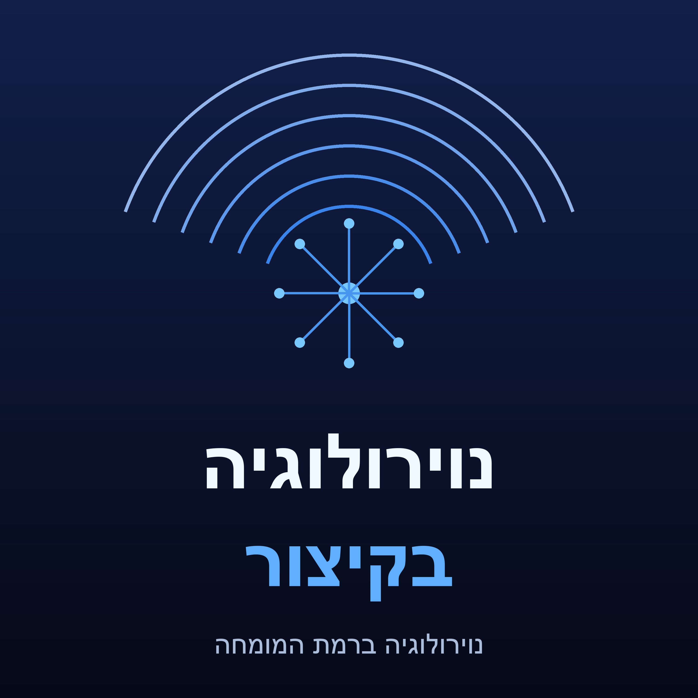

פודקאסט לימודי בעברית על טרשת נפוצה ונוירואימונולוגיה לרופאים, מתמחים וסטודנטים
RSS: https://johnn12389.github.io/vk3mqz8xrlpd/42fad93ff6fa.xml
https://johnn12389.github.io/vk3mqz8xrlpd/42fad93ff6fa.xml
התוכן מופק אוטומטית באמצעות בינה מלאכותית ועלול להכיל טעויות; אין לראות בו ייעוץ רפואי.